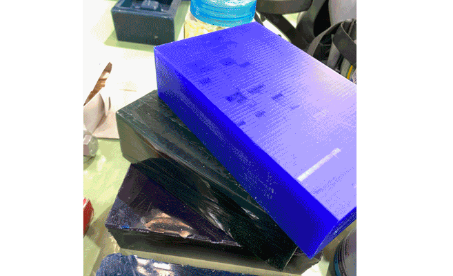
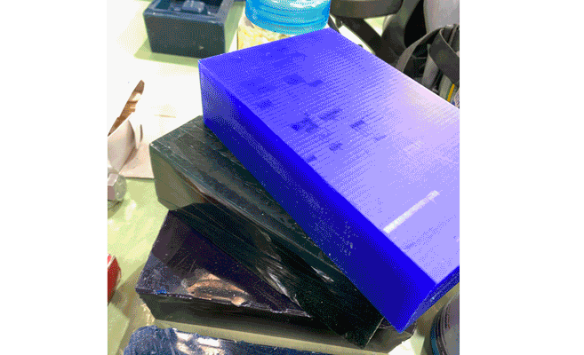

🗓 23 March 2022
Following the lecture, we got a hands-on demo of casting silicone with existing molds in the Fab Lab. We were shown the availabe materials we could use: different flexibilities of silicone and food-safe silicone. We learned how to mix the silicone, remove the bubbles by using the vaccum chamber, and pour or inject the mixture into the mold. There are a lot of vaiables within materials, so it's important to always check the data sheet of the material we're using.

Assignment: 3D printing my own mold
Molding and Casting
In this class, we covered the different methods and materials in producing and casting molds. The two basic types of molds: 2-sided and 1-sided. The 1-sided mold always have a flat surface and 2-sided molds have. To make the negative of the mold, we can use additive processes like 3D printing or subtractive process like CNC milling. If we wanted to make a 1-sided mold from existing hard material, we can also use the thermaforming machine. We covered the different materials that were available to use: wood, wax, and polyurithane, with wax being optimal for it is reusable and non-stick properties. We also went over how to design for molds for simple and complex shapes, and most importantly so the casted object is able to be removed from the mold.Following the lecture, we got a hands-on demo of casting silicone with existing molds in the Fab Lab. We were shown the availabe materials we could use: different flexibilities of silicone and food-safe silicone. We learned how to mix the silicone, remove the bubbles by using the vaccum chamber, and pour or inject the mixture into the mold. There are a lot of vaiables within materials, so it's important to always check the data sheet of the material we're using.

Assignment: 3D printing my own mold